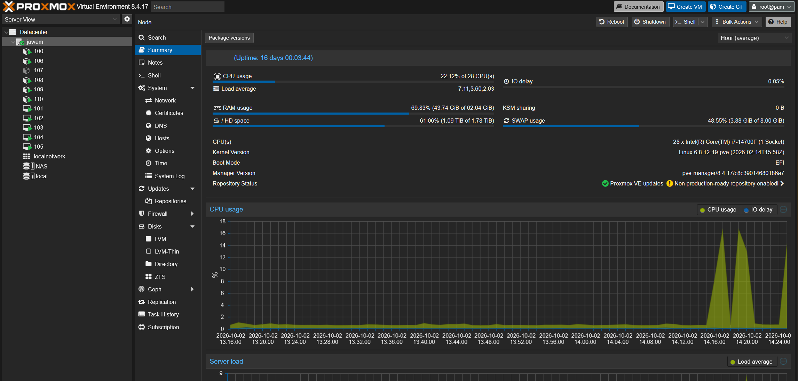
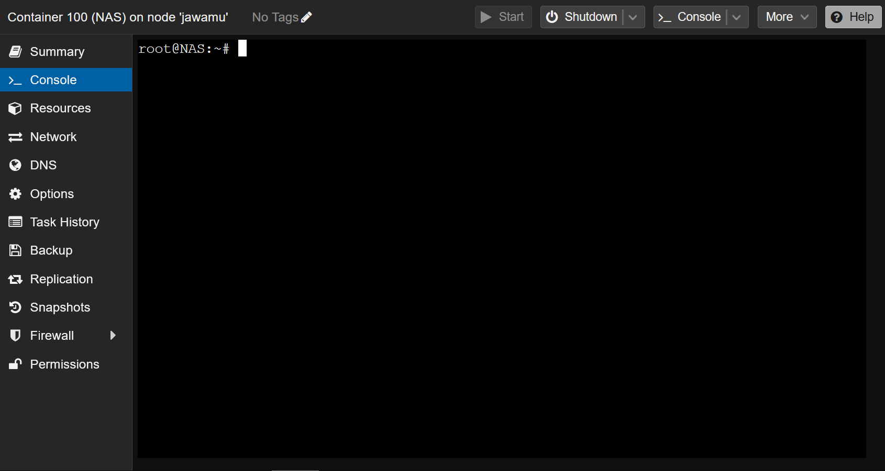

Why?
Before I started this project, all my "servers" were computers running
Windows 10 that I'd remote desktop into. I wanted one machine I fully
controlled that could run multiple isolated environments at the same time
- media servers, game servers, test environments, and other smaller
things that could be containerized and ran independently from each other.
On the right here I have my very first "server" pictured.

Console View of My Container Handling My NAS
What does it do?
Proxmox VE is a hypervisor OS that lets me spin up and manage virtual machines and LXC containers on my home hardware. It handles CPU and RAM allocation, snapshots, backups, and networking for every guest through a single web interface - no need to log into each one individually. In simpler terms it allows me to run multiple simulated computers all from one single computer.
What did I learn?
Setting this up taught me how virtualization actually works under the hood - the difference between a full VM and a container, how the hypervisor allocates CPU cores and RAM, and why resource limits matter when several guests share one machine. I also got comfortable reading logs, working in Linux terminals, and automating other processes.